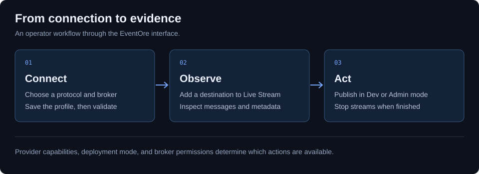

Using EventOre
A practical tour of connections, live streams, inspection, and everyday operations.
New to the product? Complete the local MQTT walkthrough first. This guide assumes the console is running and the backend can reach your broker. Screen labels below match the current React interface.

1. Create and validate a connection
- Open Connections. Use the connection wizard or the New connection form.
- Enter a descriptive name such as
staging-orders-kafka. Choose a Stream platform preset or select a Protocol. - Enter the Broker URL reachable from the backend. For the tutorial this is
tcp://mosquitto:1883, not the browser address. - Fill in protocol-specific fields. MQTT uses a topic filter; RabbitMQ uses a virtual host and queue; Kinesis uses an AWS region. Follow the relevant protocol guide for credentials and TLS.
- Save the profile and run its validation action. Resolve authentication or network errors before starting a stream.
In ReadOnly mode, an operator cannot create or change connections. Profiles must be provisioned by the deployment owner. If the API requires a token, open Settings and enter it before making requests.
2. Open a live stream
- Open Live Stream.
- Under Add stream, choose a Connection and enter a Destination. For the MQTT tutorial, use
events/orders. - Select Add to side panel. Select that stream in the side panel to inspect it.
- Check the WebSocket indicator and stream status. Publish a fresh test message after the subscription starts.
You can also start from Browse when the provider supports destination discovery. MQTT does not provide a universal list of historical topics; use a known topic or filter.
3. Publish a test event
In Dev or Admin mode, the selected stream exposes Publish to [destination]. Use a test destination and paste this JSON:
{"event":"order.created","orderId":"demo-1001","total":49.95,"currency":"USD"}Select Publish and look for Published. Confirm that a new record arrives in the selected stream. ReadOnly mode hides publishing; Dev mode caps payload size. A publish acknowledgement is not proof that a downstream consumer processed the event.
4. Investigate a message or backlog
Select the relevant stream and use its available inspector tabs. These differ by provider; the capability comparison explains the differences.
- Kafka topic investigation: inspect topics, partitions, consumer groups, and lag. A backlog concentrated in one partition can guide the next investigation; it does not alone identify the cause.
- Find an event: use the supported message search controls, choose a bounded sample, and inspect headers and payloads. Export returned results using the export controls where available.
- Recover failed messages: follow the DLQ guide and test a small redrive before increasing volume.
- Move messages between systems: follow the bridge guide; check destination permissions and dry-run output first.
5. Stop and clean up
Use Stop in the stream side panel when observation is finished. Use Start to resume a stopped stream, or Remove to remove it from the workspace. Browser workspace restoration is a convenience, not durable message storage. Export the evidence you need before closing the session.
Next: worked example · troubleshooting · configuration reference.